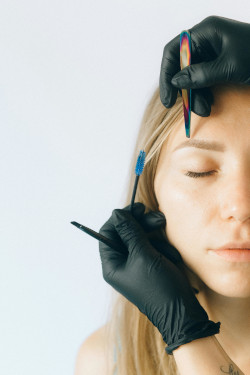
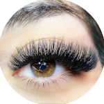

Sobre Nós
Bem-vindo à
CíliosElaineAraujo
No coração da beleza, nós nos especializamos em realçar o olhar feminino através de técnicas de extensão de cílios de alta qualidade. Nossa missão é proporcionar uma experiência única que não apenas valoriza a beleza de cada cliente, mas também promove o auto-cuidado e a autoestima. Aqui, acreditamos que a beleza deve ser celebrada. Por isso, estamos comprometidos em criar um ambiente acolhedor e relaxante, onde cada visita é uma oportunidade para você se sentir especial. Nosso foco está na qualidade, segurança e satisfação do cliente. Procedimentos
Fio a Fio
Técnica de extensão de cílios que proporciona um resultado mais natural e duradouro.
AgendarVolume Russo
Três fios são colados no cílio natural, garantindo um olhar marcante com mais volume e textura.
 AgendarVolume Brasileiro
Técnica de extensão de cílios que se caracteriza pelo uso de fios em formato de Y para dar mais volume aos cílios naturais.
AgendarDesign de Sobrancelhas
Técnica utilizada para desenhar as sobrancelhas e tem como objetivo valorizar o rosto e expressão da cliente.
Agendar